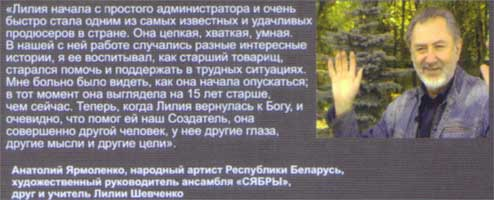

| АХ, КАКАЯ ЖЕНЩИНА...
БЫЛА БОМЖом Лилия ШЕВЧЕНКО |
| Книга эта попала ко мне через моего друга Николая. Во время одной из наших редких встреч я
рассказал ему о намерении в церкви работать по борьбе с наркоманией среди молодежи Торонто.
Тогда он вспомнил о Татьяне Фадеевой, с которой заочно я был знаком и ее новой книге. Думаю, что для наших в церкви будет полезно прочитать эту книгу. Я получил разрешения на ее публикацию на нашем сайте. На сайте книга в 4-х файлах: Сама книга Свидетельства Молитва покаяния Описание реабилититационного центра "Родник" Как всегда, все фотографии можно просматривать в увеличенном масштабе, для чего надо кликнуть на фото. Не забывайте закрывать окна! Я не ставлю автоматическое закрывание. |
|  | |
|
|